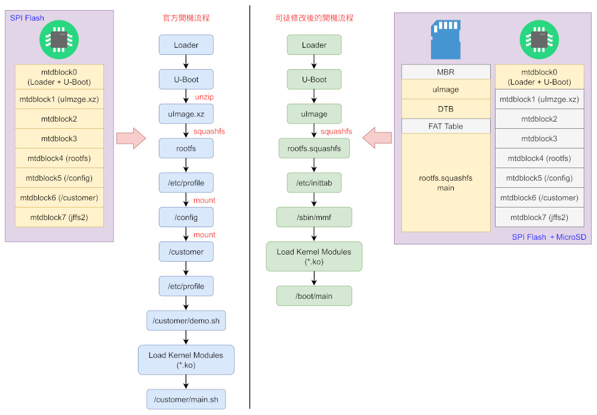
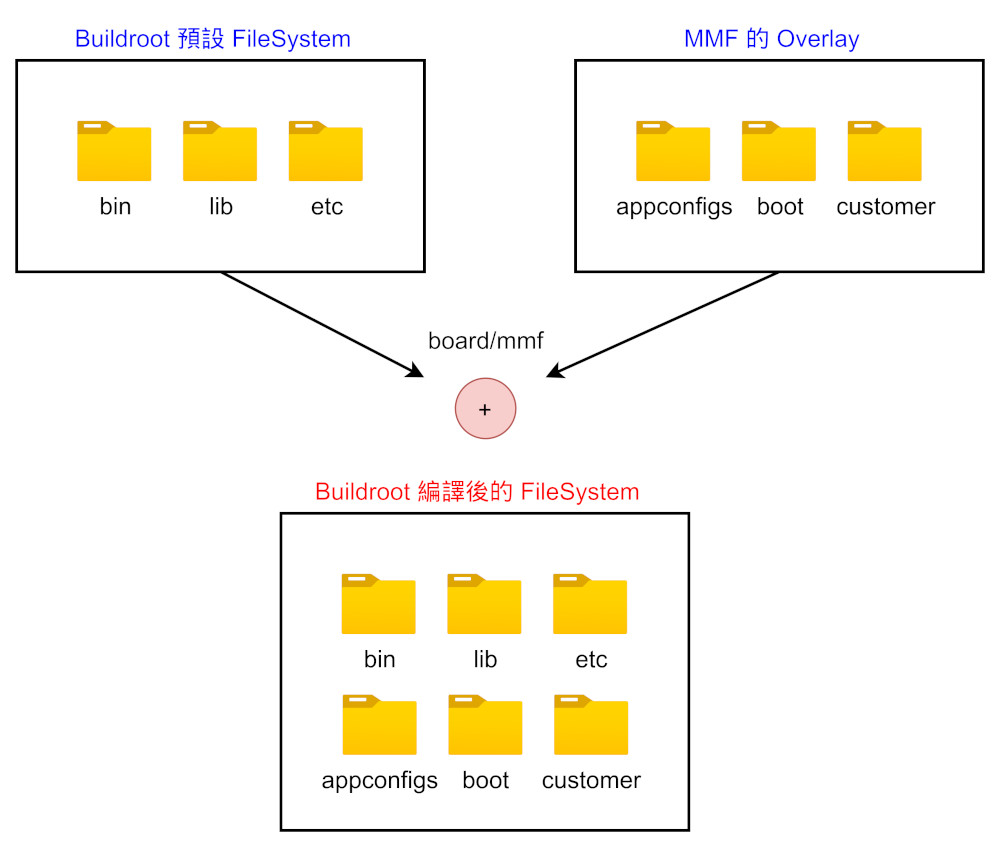
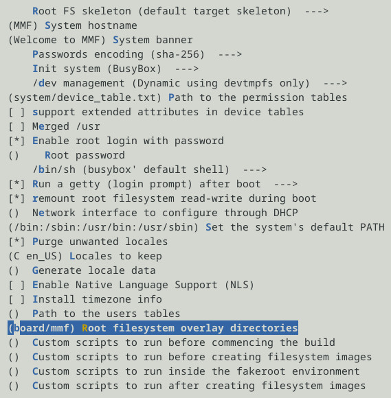
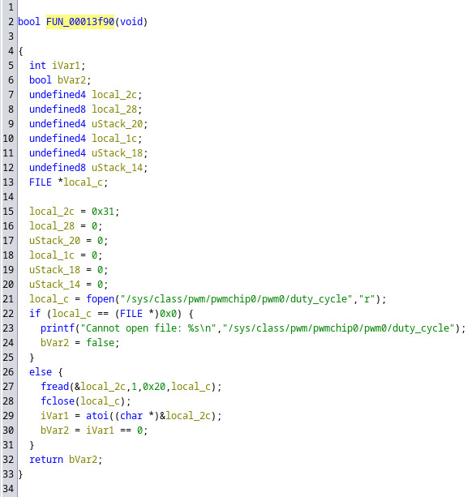
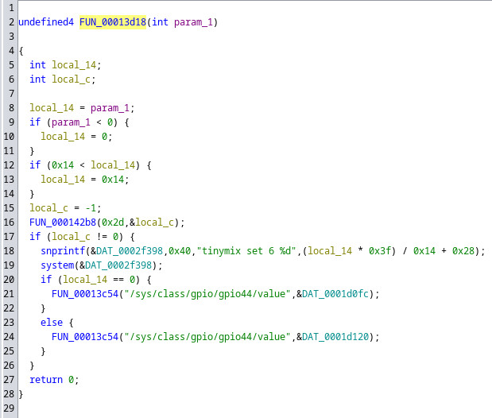
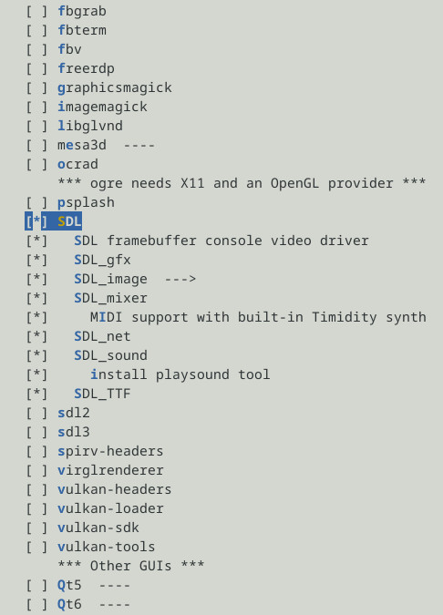
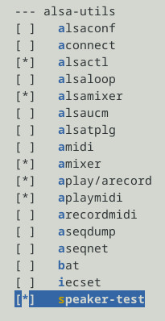
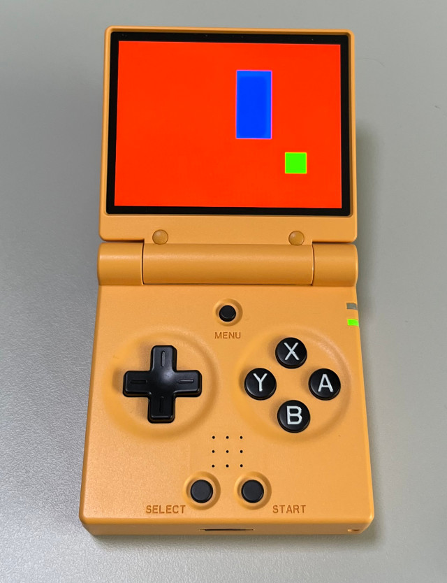

Steward
分享是一種喜悅、更是一種幸福
掌機 - Miyoo Mini Flip - 移植OS-UI
司徒將目前Miyoo Mini Flip如何從SPI Flash開機的流程以及我們預計修改的流程做一個比較：

由於我們需要添加Miyoo Mini Flip的聲音設定、Kernel Module等檔案，這些檔案是從SPI Flash提取出來的，在Buildroot編譯環境下，可以自己添加需要的檔案，Buildroot稱之為Overlay Directory，最後編譯時，Buildroot會合併使用，相當方便手動添加需要的檔案，如下說明：

司徒將需要的檔案放在board/mmf下
$ ls board/mmf/
appconfigs boot config customer etc sbin var vendor
System configuration

/sbin/mmf
#!/bin/sh
mkdir -p /dev/pts
mount -t sysfs none /sys
mount -t tmpfs mdev /dev
mount -t debugfs none /sys/kernel/debug/
mdev -s
mkdir -p /var/lock
mount -t devpts devpts /dev/pts
ulimit -c unlimited
echo 4 > /sys/class/gpio/export
echo 0 > /sys/class/pwm/pwmchip0/export
echo 800 > /sys/class/pwm/pwmchip0/pwm0/period
echo 50 > /sys/class/pwm/pwmchip0/pwm0/duty_cycle
echo 1 > /sys/class/pwm/pwmchip0/pwm0/enable
echo 44 > /sys/class/gpio/export
echo "low" > /sys/class/gpio/gpio44/direction
echo 1 > /sys/class/gpio/gpio44/value
if [ -e /etc/core.sh ]; then
echo "|/etc/core.sh %p" > /proc/sys/kernel/core_pattern
fi;
insmod /config/modules/4.9.84/mhal.ko
insmod /config/modules/4.9.84/mi_common.ko
major=`cat /proc/devices | busybox awk "\\$2==\""mi"\" {print \\$1}"\n`
minor=0
insmod /config/modules/4.9.84/mi_sys.ko cmdQBufSize=128 logBufSize=0
if [ $? -eq 0 ]; then
busybox mknod /dev/mi_sys c $major $minor
let minor++
fi
insmod /config/modules/4.9.84/mi_gfx.ko
if [ $? -eq 0 ]; then
busybox mknod /dev/mi_gfx c $major $minor
let minor++
fi
insmod /config/modules/4.9.84/mi_divp.ko
if [ $? -eq 0 ]; then
busybox mknod /dev/mi_divp c $major $minor
let minor++
fi
insmod /config/modules/4.9.84/mi_vdec.ko
if [ $? -eq 0 ]; then
busybox mknod /dev/mi_vdec c $major $minor
let minor++
fi
insmod /config/modules/4.9.84/mi_ao.ko
if [ $? -eq 0 ]; then
busybox mknod /dev/mi_ao c $major $minor
let minor++
fi
insmod /config/modules/4.9.84/mi_disp.ko
if [ $? -eq 0 ]; then
busybox mknod /dev/mi_disp c $major $minor
let minor++
fi
insmod /config/modules/4.9.84/mi_ipu.ko
if [ $? -eq 0 ]; then
busybox mknod /dev/mi_ipu c $major $minor
let minor++
fi
insmod /config/modules/4.9.84/mi_ai.ko
if [ $? -eq 0 ]; then
busybox mknod /dev/mi_ai c $major $minor
let minor++
fi
insmod /config/modules/4.9.84/mi_venc.ko
if [ $? -eq 0 ]; then
busybox mknod /dev/mi_venc c $major $minor
let minor++
fi
insmod /config/modules/4.9.84/mi_panel.ko
if [ $? -eq 0 ]; then
busybox mknod /dev/mi_panel c $major $minor
let minor++
fi
insmod /config/modules/4.9.84/mi_alsa.ko
if [ $? -eq 0 ]; then
busybox mknod /dev/mi_alsa c $major $minor
let minor++
fi
major=`cat /proc/devices | busybox awk "\\$2==\""mi_poll"\" {print \\$1}"`
busybox mknod /dev/mi_poll c $major 0
insmod /config/modules/4.9.84/fbdev.ko
mdev -s
amixer set "Playback Volume Line Out" 60%
cd /boot
./main&
針對屏的亮度設定，司徒透過逆向官方keymon取得如下設定資訊

echo 4 > /sys/class/gpio/export echo 0 > /sys/class/pwm/pwmchip0/export echo 800 > /sys/class/pwm/pwmchip0/pwm0/period echo 50 > /sys/class/pwm/pwmchip0/pwm0/duty_cycle echo 1 > /sys/class/pwm/pwmchip0/pwm0/enable
如下是喇叭的音量開關設定

echo 44 > /sys/class/gpio/export echo "low" > /sys/class/gpio/gpio44/direction echo 1 > /sys/class/gpio/gpio44/value
喇叭音量的設定則是可以透過amixer或者tinymix設定
$ amixer set 'Playback Volume Line Out' 50% $ tinymix set 6 50
接著在Buildroot勾選SDL，這樣我們就可以測試屏的顯示

勾選speaker-test，可以測試喇叭

編譯好Buildroot後，我們編譯一個SDL測試程式
#include <stdio.h>
#include <stdlib.h>
#include <SDL.h>
int main(int argc, char **argv)
{
SDL_Rect rt = {0};
SDL_Surface *screen = NULL;
SDL_Init(SDL_INIT_VIDEO);
screen = SDL_SetVideoMode(320, 240, 16, SDL_HWSURFACE);
SDL_FillRect(screen, &screen->clip_rect, SDL_MapRGB(screen->format, 0xff, 0x00, 0x00));
rt.x = 50;
rt.y = 50;
rt.w = 30;
rt.h = 30;
SDL_FillRect(screen, &rt, SDL_MapRGB(screen->format, 0x00, 0xff, 0x00));
rt.x = 100;
rt.y = 100;
rt.w = 50;
rt.h = 100;
SDL_FillRect(screen, &rt, SDL_MapRGB(screen->format, 0x00, 0x00, 0xff));
SDL_Flip(screen);
SDL_Delay(3000);
SDL_Quit();
return 0;
}
編譯
$ wget https://github.com/steward-fu/website/releases/download/miyoo-mini-flip/sdk.tar.gz
$ tar xvf sdk.tar.gz
$ cd sdk
$ mv xxx/main.c .
$ /opt/mmf/bin/arm-linux-gcc \
main.c \
-o main \
-lSDL \
-Iinclude \
lib/libmi_ao.a \
lib/libmi_sys.a \
lib/libmi_common.a \
-I/opt/mmf/arm-mmf-linux-gnueabihf/sysroot/usr/include/SDL
P.S. 編譯後將main、rootfs.squashfs放到MicroSD根目錄
完成

P.S. 測試檔案https://github.com/steward-fu/website/releases/download/miyoo-mini-flip/os-ui_test_20261003.img